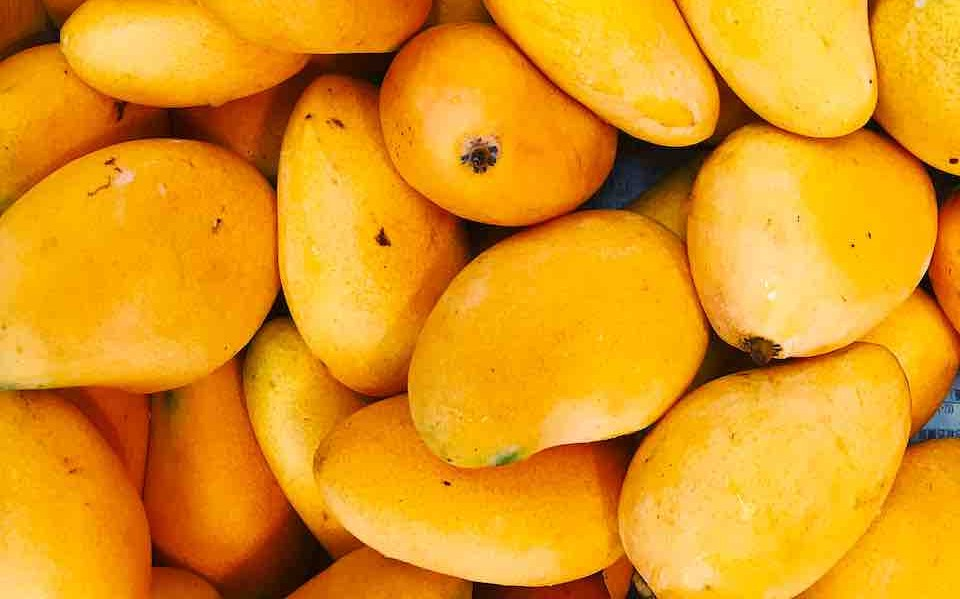
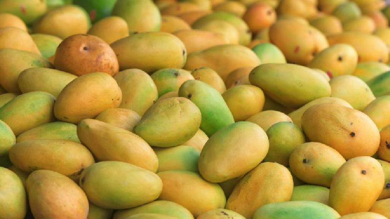
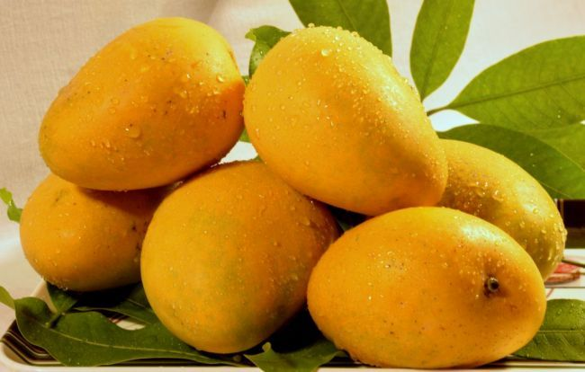

Premium Mango Varieties
Alphonso – The King of Mangoes
The Alphonso Advantage: A Nutritional Powerhouse
- Coastal Mineral Boost: Grown in mineral-rich laterite soil, it contains superior levels of Magnesium and Manganese for heart and bone health.
- Unique Mangiferin: High concentrations of this antioxidant protect cells from DNA damage and reduce inflammation.
- Natural Eye Protection: Lutein and zeaxanthin help filter harmful blue light.
- Metabolic Synergy: Low Glycemic Index (~51) provides steady energy.
- Pure Digestive Ease: Creamy fiberless pulp aids smooth digestion.


Mallika – Nature’s Multivitamin
Nature’s Multivitamin in a Fruit
- Vitamin A Powerhouse: Supports eye health and immune defense.
- Peak Flavonoid Levels: High antioxidants protect heart health.
- Maximum Fiberless Pulp: High pulp-to-stone ratio.
- Skin Rejuvenation: Boosts collagen production.
- Natural Energy Reservoir: Provides sustained energy.
Banganapalli – The King of South India
Nature’s Gold Standard for Immunity
- Vitamin C Powerhouse: High Vitamin C boosts immunity.
- Heart-Healthy Electrolytes: Supports blood pressure.
- Potent Antioxidants: Protects against oxidative stress.
- Superior Digestibility: Gentle fiberless pulp.
- Natural Detoxifier: Supports kidney function.


Kesar – The Golden Queen
The Golden Queen of Antioxidants
- Vitamin A Champion: Supports vision.
- Saffron Antioxidants: Reduce inflammation.
- Skin Glow Benefits: Vitamin C & E improve skin.
- Metabolic Friendly: Balanced glycemic index.
- Elite Digestive Ease: Smooth digestion.
Himampasand – The Connoisseur’s Royal Choice
A Regal Nutritional Experience
- Vitamin A & Iron Rich: Supports hemoglobin.
- Dual Antioxidants: Protects heart health.
- Unique Flavor Profile: Coconut & lime notes.
- Superior Pulp Ratio: More edible pulp.
- Cooling Properties: Supports digestion.
